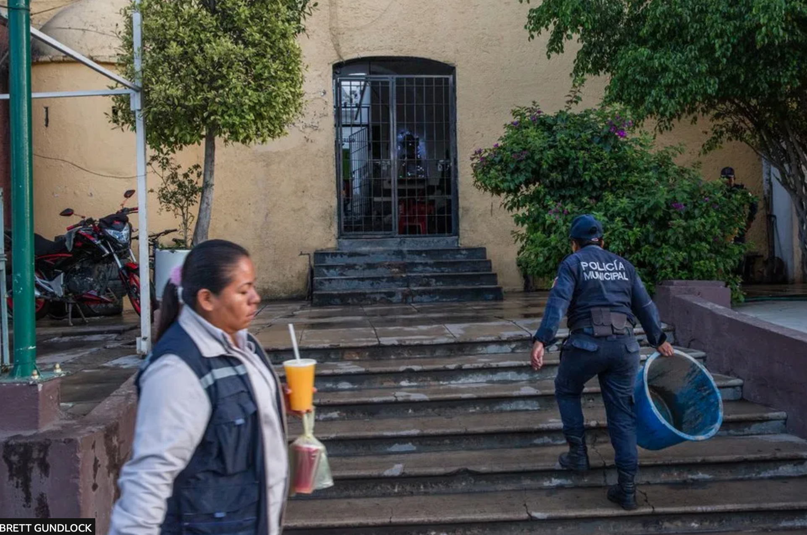

On 29 August 2018 Ricardo, a 21-year-old student, and his uncle, a 43-year-old farmer, were burnt to death by an angry mob because of a rumour that was circulated on WhatsApp claiming that they were child abductors. Ricardo and his uncle went to the town centre on 29 August to buy construction supplies and were mistakenly accosted by locals. This led to their subsequent arrest by the police under the pretence of the two men ‘disturbing the peace’. Meanwhile, a WhatsApp message falsely warning of child kidnappers spread panic in the community. Influenced by these rumours, a mob gathered outside the police station. Despite police assurances that the men were not kidnappers, the situation escalated due to misinformation spread via WhatsApp and Facebook. Francisco Martinez, known as "El Tecuanito", live-streamed the event on Facebook, further inciting the crowd. Another man identified as Manuel, rang town hall bells to signal the supposed release of the two men and Petronilo Castelan, known as "El Paisa", urged the crowd to buy petrol to set them on fire. The mob eventually overran the police station, beat the two men and set them ablaze. Ricardo likely died from the beating, while Alberto was still alive when set on fire. All three of these men were later charged with murder.
You might be wondering why and how things escalated so quickly and ended in such a catastrophe. In countries like Mexico and India, WhatsApp allows messages to be sent to very large groups. The app's end-to-end encryption further adds to the challenge of tracing the origin of any shared content. Despite WhatsApp's claim to limit groups to twenty people, a Washington Post article from 23 July 2018, revealed that groups supposedly capped at six members were reaching sizes of up to 256 people. The article also highlighted that in countries like India and other less affluent nations, many users lack digital literacy skills. This lack of experience makes manipulating public opinion with false information easier for political parties and others.
In the April 2019 edition of the International Journal of Innovative Technology and Exploring Engineering, researchers pinpoint two factors that contribute to the widespread dissemination of false information. The first factor is the affordability of mobile phones and the second factor is the notable decrease in internet data costs. Moreover, a common concern revolves around society’s general lack of awareness in identifying and dealing with fake news messages.
Aside from the issues mentioned above, a significant psychological and social component is also at play. This raises questions about why individuals believe in fake news and how a group can transform into a crowd and then escalate into a mob. (Chadna 2019) states that emotional bonds become factors that unite an entire group.
(Nickerson 2023) discusses how being part of a group can lead to deindividuation—a state where individuals lose self-awareness. This can result in people being less likely to follow restraints and inhibitions, making them more susceptible to losing their sense of individual identity. Researchers at the University of Leeds have found that humans tend to follow a few key figures within a group, similar to how sheep or birds behave, especially when there are only a small number of well-informed individuals within the crowd (Dyer et al. 2008).
The issue of conformity is also worth considering. People often opt to follow others instead of engaging in independent thought processes as it is more convenient. When individuals who share beliefs gather together, like in the Mexico incident, they tend to reinforce and strengthen each other’s convictions, resulting in a more deeply rooted and resilient collective mindset. This particular group discovered a sense of camaraderie, influence and comfort through their actions. The root cause of it all can be traced back to a WhatsApp message that unfortunately led to the tragic loss of two innocent lives.
💡Lesson of the day: 💡
Before letting fear or panic guide your actions, pause and evaluate the reasons behind your response as well as the credibility of the information that triggered such a reaction. By adopting a mindset that values making decisions based on evidence and being sceptical towards unverified claims, you can play a role in creating a society that is better informed and less prone to knee-jerk reactions.